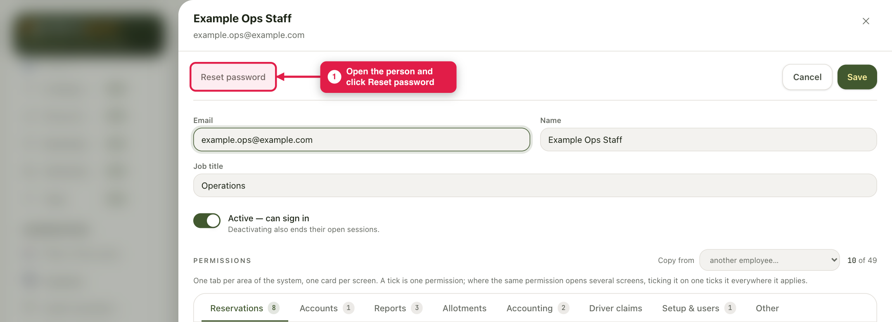
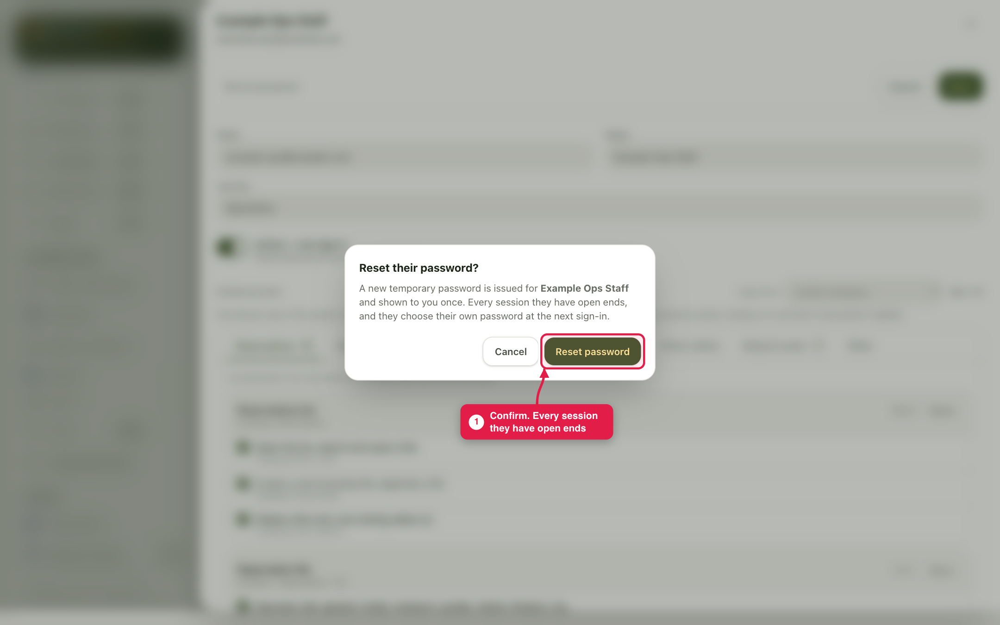
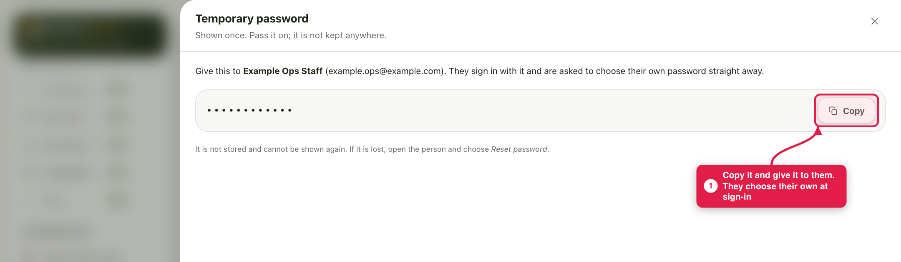
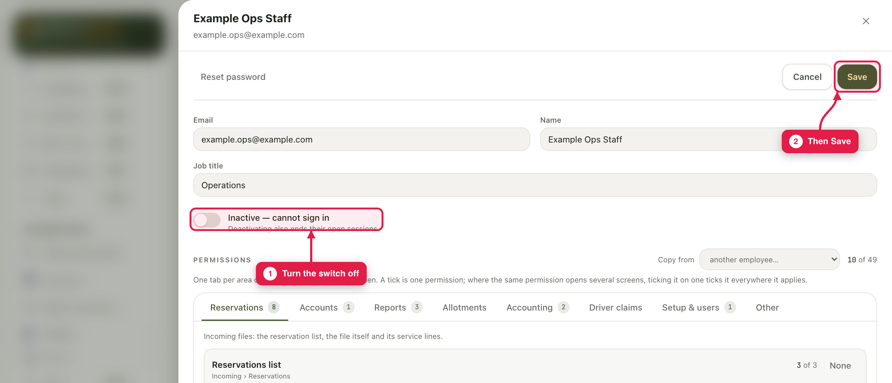
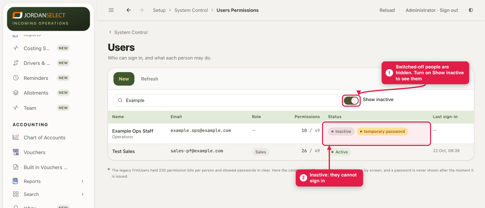

Someone has forgotten their password, or has left the company. Give them a new temporary password, or stop them signing in.
WhoThe administrator
WhereSetup → System Control → Users Permissions
Takes1 minute
You needA way to give them the new password in person or by phone
How it works
Reset password makes a new temporary password and signs them out everywhere. Switching someone off stops them signing in and ends their open sessions. They are not deleted: their name stays on everything they did, and you can switch them back on.
Example in this guide: Example Ops Staff gets a new password, and is then switched off.
1. Reset a password
1
Open the person and click Reset password.

Reset password is at the top of their page.
2
Click Reset password to confirm.

Every session they have open ends at once.
3
The new temporary password is shown once. Copy it, give it to them, and click Done. At their next sign-in they choose their own.

The password is hidden in this picture. On your screen it is shown in full.
Check who is askingReset a password only for the person themselves, and give the new one to them directly. Anyone holding it can sign in as them.
2. Switch someone off
4
Open the person and turn off the Active — can sign in switch. It now reads Inactive — cannot sign in. Click Save.

Switching off also ends their open sessions. You cannot switch off your own user.
5
They leave the list. To find them again, turn on Show inactive. To let them back in, open them, turn the switch back on and click Save.

Found with Show inactive on, marked Inactive.
When someone leavesSwitch them off on their last day, and make sure a colleague has taken over their open files so nothing waits on them.
Last checked: ____ · Screens shown are from a test copy of the CRM with made-up data.